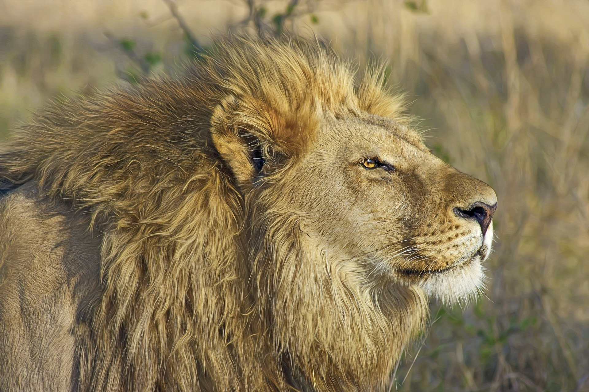

National Parks in India
Created by: Parth Wanage, this story map illustrates the National Parks in India using a story map, please scroll down to continue.Jim Corbett
Jim Corbett National Park is the oldest national park in India and was established in 1936 as Hailey National Park to protect the endangered Bengal tiger. It is located in Nainital district and Pauri Garhwal district of Uttarakhand and was named after Jim Corbett, a well known hunter and naturalist. The park was the first to come under the Project Tiger initiative.
The park has sub-Himalayan belt geographical and ecological characteristics. An ecotourism destination, it contains 488 different species of plants and a diverse variety of fauna. The increase in tourist activities, among other problems, continues to present a serious challenge to the park's ecological balance.Corbett has been a haunt for tourists and wildlife lovers for a long time. Tourism activity is only allowed in selected areas of Corbett Tiger Reserve so that people get an opportunity to see its landscape and wildlife. In recent years the number of people coming here has increased dramatically. Presently, every season more than 70,000 visitors come to the park.
Corbett National Park comprises 520.8 km2 (201.1 sq mi) area of hills, riverine belts, marshy depressions, grasslands and a large lake. The elevation ranges from 1,300 to 4,000 ft (400 to 1,220 m). Winter nights are cold but the days are bright and sunny. It rains from July to September.Dense moist deciduous forest mainly consists of sal, haldu, peepal, rohini and mango trees. Forest covers almost 73% of the park, 10% of the area consists of grasslands. It houses around 110 tree species, 50 species of mammals, 580 bird species and 25 reptile species.
Kaziranga National Park
Kaziranga National Park is a national park in the Golaghat, Karbi Anglong and Nagaon districts of the state of Assam, India. The sanctuary, which hosts two-thirds of the world's great one-horned rhinoceroses, is a World Heritage Site. According to the census held in March 2018 which was jointly conducted by the Forest Department of the Government of Assam and some recognized wildlife NGOs, the rhino population in Kaziranga National Park is 2,413. It comprises 1,641 adult rhinos (642 males, 793 females, 206 unsexed), 387 sub-adults (116 males, 149 females, 122 unsexed), and 385 calves. In 2015, the rhino population stood at 2401. Kaziranga is home to the highest density of tigers among protected areas in the world, and was declared a Tiger Reserve in 2006 (now the highest tiger density is in Orang National Park, Assam) . The park is home to large breeding populations of elephants, wild water buffalo, and swamp deer. Kaziranga is recognized as an Important Bird Area by BirdLife International for conservation of avifaunal species. When compared with other protected areas in India, Kaziranga has achieved notable success in wildlife conservation. Located on the edge of the Eastern Himalaya biodiversity hotspot, the park combines high species diversity and visibility.

Kaziranga is a vast expanse of tall elephant grass, marshland, and dense tropical moist broadleaf forests, criss-crossed by four major rivers, including the Brahmaputra, and the park includes numerous small bodies of water. Kaziranga has been the theme of several books, songs, and documentaries. The park celebrated its centennial in 2005 after its establishment in 1905 as a reserve forest.
Ranthambore National Park
Ranthambhore National Park or Ranthambhore is a national park in northern India, initially covering 282 km² at the time it was formed. Ranthambhore was established as the Sawai Madhopur Game Sanctuary in 1955 by the Government of India and was declared one of the Project Tiger reserves in 1973. Ranthambhore became a national park on 1 November 1980. In 1984, the adjacent forests were declared the Sawai Man Singh Sanctuary and Keladevi Sanctuary. In 1992, the Tiger Reserve was expanded to include the adjoining Keladevi Sanctuary in the north and Sawai Mansingh sanctuary to the south along with other forests. Today it covers an area of 1334 sq. km.
Ranthambhore wildlife sanctuary is known for its Bengal tigers, and is a popular place in India to see these animals in their natural jungle habitat. Tigers can be easily spotted even in the daytime. The best times for tiger sightings at Ranthambhore National Park are deemed to be in November and May. The park's deciduous forests are characteristic examples of the type of jungle found in Central India. Other fauna include the Indian leopard, nilgai, wild boar, sambar, striped hyena, sloth bear, southern plains gray langur, rhesus macaque, mugger crocodile and chital. The sanctuary is home to a wide variety of trees, plants, birds and reptiles, as well as one of the largest banyan trees in India.
Ranthambore is known for its large tiger population. As park tourism and the population of neighbouring villages increased, there were more frequent fatal human-tiger interactions and poaching. The Indian government started Project Tiger in 1973 and allotted an area of 60 mi2 of the park as a tiger sanctuary. This area later expanded to become what is now the Ranthambhore National Park.
Gir Forest
Gir National Park and Wildlife Sanctuary, also known as Sasan Gir, is a forest and wildlife sanctuary near Talala Gir in Gujarat, India. It is located 43 km (27 mi) north-east of Somnath, 65 km (40 mi) south-east of Junagadh and 60 km (37 mi) south-west of Amreli. It was established in 1965, with a total area of 1,412 km2 (545 sq mi), of which 258 km2 (100 sq mi) is fully protected as national park and 1,153 km2 (445 sq mi) as wildlife sanctuary. It is part of the Khathiar-Gir dry deciduous forests ecoregion.
The 14th Asiatic Lion Census 2015 was conducted in May 2015. In 2015, the population was 523 (27% up compared to previous census in 2010). The population was 411 in 2010 and 359 in 2005. The lion population in Junagadh District was 268 individuals, 44 in Gir Somnath District, 174 in Amreli District , and 37 in Bhavangar District. There are 109 males, 201 females and 213 cubs. The count of 2,375 distinct fauna species of Gir includes about 38 species of mammals, around 300 species of birds, 37 species of reptiles and more than 2,000 species of insects. The carnivores group mainly comprises the Asiatic lion, Indian leopard, jungle cat, striped hyena, Golden jackal, Indian gray mongoose and Ruddy mongoose, and honey badger. Desert cats and rusty-spotted cats occur but are rarely seen.
Gir National Park is closed from 16 June to 15 October every year. The best time to visit it is between December and March. Although it is very hot in April and May, these are the best months for wildlife viewing and photography.
Kanha National Park
Kanha Tiger Reserve, also known as Kanha–Kisli National Park, is one of the tiger reserves of India and the largest national park of the state of Madhya Pradesh. The present-day Kanha area is divided into two sanctuaries, Hallon and Banjar, of 250 and 300 km2 (97 and 116 sq mi), respectively. Kanha National Park was created on 1 June 1955 and was designated a tiger reserve in 1973. Today, it encompasses an area of 940 km2 (360 sq mi) in the two districts Mandla and Balaghat.
Kanha Tiger Reserve is home to over 1000 species of flowering plants. The lowland forest is a mixture of sal (Shorea robusta) and other mixed-forest trees, interspersed with meadows. The highland forests are tropical moist, dry deciduous type and of a completely different nature from bamboo (Dendrocalamus strictus) on slopes. A notable Indian ghost tree (Davidia involucrata) can also be seen in the dense forest. Kanha Tiger Reserve has species of tigers, leopards, wild dogs, wild cats, foxes and jackals. Among the deer species, swamp deer (Cervus duavcelli branderi) or hard-ground barasingha is the pride of the place, as it is the only subspecies of swamp deer in India, except the great swamp deer of Sundarbans. The animal is adapted to hard ground unlike swamp deer of the north, which live in marshy swamps. The reserve has been instrumental in rescuing the swamp deer from extinction. Indian gaur (Bos guarus), belonging to the ox genus, are found in Kanha, but seen mostly as winter ends. In summer, gaur inhabit meadows and waterholes in the park.
Sundarbans National Park
The Sundarbans is a mangrove area in the delta formed by the confluence of the Ganges, Brahmaputra and Meghna Rivers in the Bay of Bengal. It spans from the Hooghly River in India's state of West Bengal to the Baleswar River in Bangladesh. It comprises closed and open mangrove forests, agriculturally used land, mudflats and barren land, and is intersected by multiple tidal streams and channels. Four protected areas in the Sundarbans are enlisted as UNESCO World Heritage Sites namely Sundarbans National Park, Sundarbans West, Sundarbans South and Sundarbans East Wildlife Sanctuaries. The Sundarbans mangrove forest covers an area of about 10,000 km2 (3,900 sq mi), of which forests in Bangladesh's Khulna Division extend over 6,017 km2 (2,323 sq mi) and in West Bengal, they extend over 4,260 km2 (1,640 sq mi) across the South 24 Parganas and North 24 Parganas districts. The most abundant tree species are sundri (Heritiera fomes) and gewa (Excoecaria agallocha). The forests provide habitat to 453 faunal wildlife, including 290 bird, 120 fish, 42 mammal, 35 reptile and eight amphibian species.
The Sundarbans provides a unique ecosystem and a rich wildlife habitat. According to the 2015 tiger census in Bangladesh, and the 2011 tiger census in India, the Sundarbans have about 180 tigers (106 in Bangladesh and 74 in India). Earlier estimates, based on counting unique pugmarks, were much higher. The more recent counts have used camera traps, an improved methodology that yields more accurate results. Tiger attacks are frequent in the Sundarbans, with up to 50 people being killed each year.